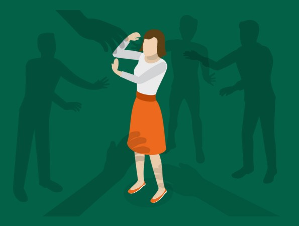
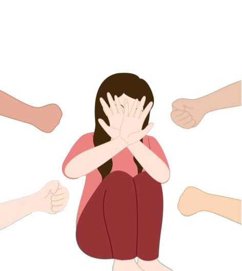
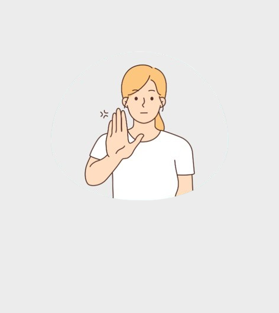

Gender


Gender-based violence (GBV) refers to harmful
acts perpetrated against individuals based on their gender.
It is rooted in unequal power dynamics and reinforced by societal norms.
Globally, nearly 1 in 3 women have experienced physical or sexual violence, most often by someone
they know. In the Philippines, the 2022 Demographic and Health Survey found that nearly 1 in 5
women aged 15 to 49 have faced physical, emotional, or sexual abuse from a current or former
partner. These numbers show that GBV is not rare — it happens everywhere, often behind closed
doors, and is rooted in systemic inequality, not isolated actions.
Forms of
Gender-Based Violence
Why Gender-Based
Violence is a problem?
PHYSICAL VIOLENCE
SEXUAL VIOLENCE
EMOTIONAL AND PSYCHOLOGICAL ABUSE
ECONOMIC AND FINANCIAL ABUSE
Forms of
Gender-Based Violence


Why Gender-Based Violence is a problem?
THREATENS PHYSICAL AND PSYCHOLOGICAL SAFETY
UNDERMINES HUMAN RIGHTS AND DIGNITY
REINFORCES DISCRIMINATION AND HARMFUL STEREOTYPES
OBSTRUCTS GENDER EQUALITY AND SOCIAL PROGRESS
OCCURS WITH IMPUNITY
IMPACTS FAMILIES AND ECONOMIES
"Not all men practice violence against women, but all women live with the threat of male violence every day."
— Fiona Vera-Gray, feminist researcher and authorWHAT CAN YOU DO TO HELP?
LEARN THE SIGNS.
BREAK THE SILENCE.
BREAK THE SILENCE.
Women’s Care Center, Inc.
0917 825 032 / 0920 9677 852
LANDLINE: 8514 4104 /
wcc.inc.ph@gmail.com
0917 825 032 / 0920 9677 852
LANDLINE: 8514 4104 /
wcc.inc.ph@gmail.com
Commission on Human Rights
(02) 8927-5790 OR
privacy@chr.gov.ph
(02) 8927-5790 OR
privacy@chr.gov.ph